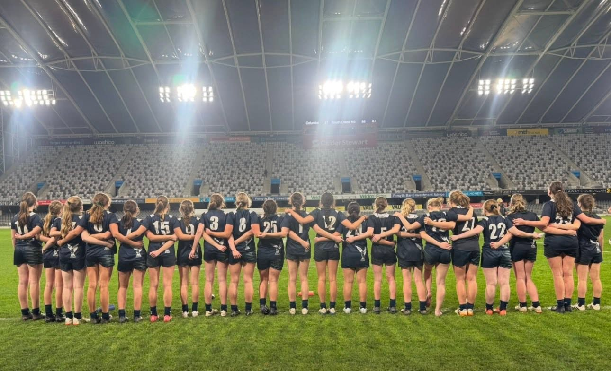

“One in three children who plays a team sport is injured seriously enough to miss practice or games.” - Safe Kids Worldwide
This website teaches youth athletes what types of injuries to look out for and how to prevent injuries in numerous different ways such as through warm ups and cool downs, nutrition, hydrration sleep and much more.